Bienvenidos a Jurassic Park Europa
¡Bienvenidos al destino turístico más emocionante del continente! Jurassic Park Europa ofrece una experiencia única e inolvidable donde podrás sumergirte en el mundo de los dinosaurios. Situado en la impresionante isla de São Miguel en las Azores, es un parque temático único que ofrece a los visitantes la oportunidad de experimentar la emoción de ver dinosaurios vivos en un entorno natural y espectacular. Rodeado por el hermoso paisaje volcánico y la exuberante vegetación de São Miguel, este parque temático combina tecnología de punta con la majestuosa belleza natural de las Azores. Aquí te presentamos los servicios que encontrarás durante tu estancia:
Centro de Visitantes
Comienza tu aventura en nuestro Centro de Visitantes, donde podrás obtener toda la información necesaria sobre el parque, sus atracciones y actividades disponibles.

Jurassic Cafe
En el Jurassic Cafe, ofrecemos una experiencia gastronómica única con un menú que deleitará a todos los paladares. Aquí puedes disfrutar de:
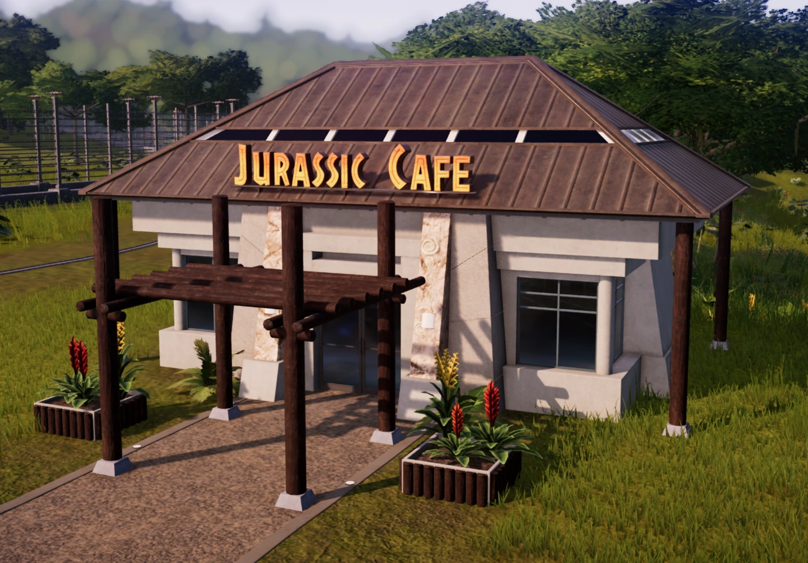Jurassic Cafe
Sandwiches

Hotel
Hospédate en nuestro lujoso hotel temático con vistas impresionantes y todas las comodidades modernas para una estancia inolvidable.
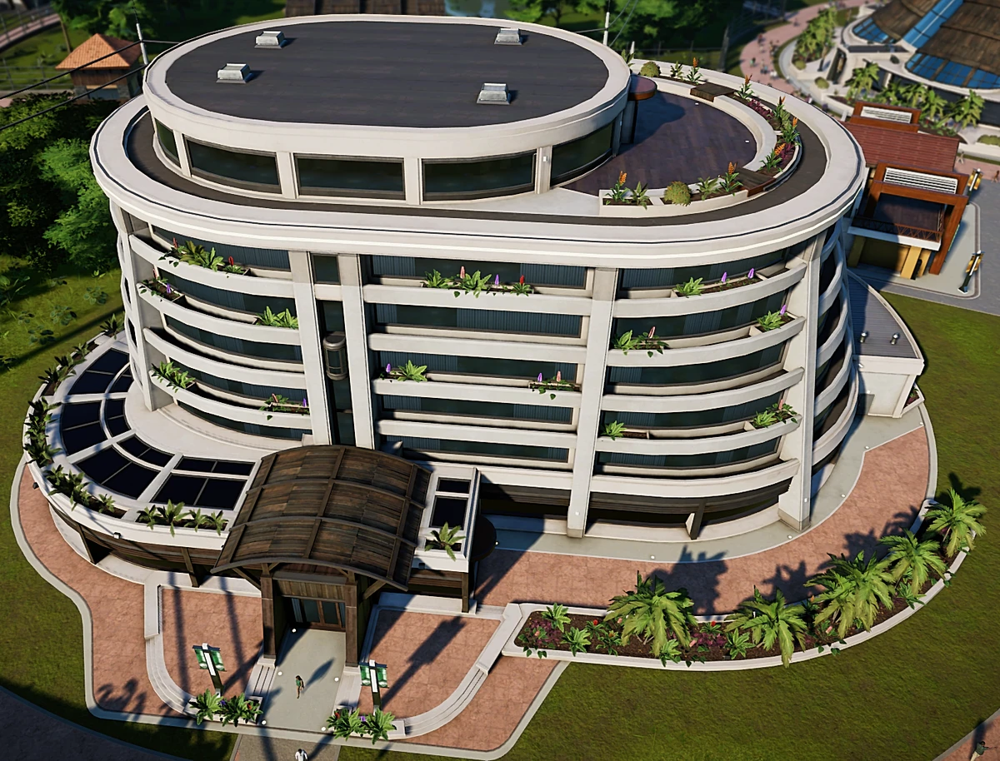Dino Discovery Museum
El Dino Discovery Museum es un espacio interactivo donde los visitantes pueden aprender sobre la historia de los dinosaurios y la ciencia detrás de su clonación. Exhibiciones incluyen fósiles auténticos, esqueletos a tamaño real, y estaciones interactivas donde puedes explorar cómo vivían estos magníficos seres.
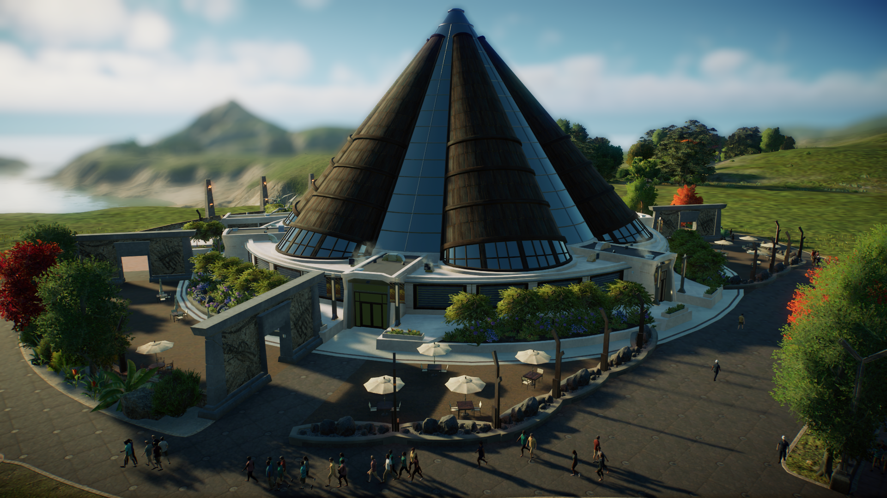Pterosauria The Imax Experience
El Pterosauria es un moderno cine 4D donde se proyectan documentales y películas sobre la era de los dinosaurios y la historia de Jurassic Park. Con efectos especiales como viento, agua y movimiento, el cine 4D proporciona una experiencia inmersiva que te hará sentir como si estuvieras en medio de la acción.
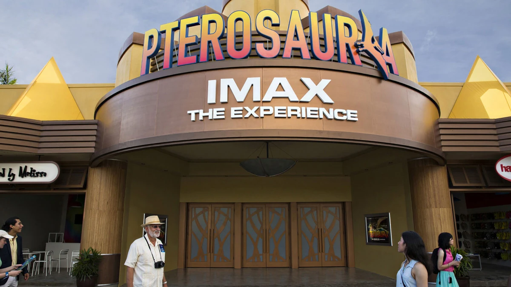Jurassic Gifts
En Jurassic Gifts, nuestra tienda de regalos, encontrarás una amplia variedad de souvenirs para recordar tu visita. Desde camisetas y gorras con el icónico logo de Jurassic Park hasta réplicas de fósiles, juguetes de dinosaurios y libros educativos. También ofrecemos artículos exclusivos y de edición limitada que solo se encuentran aquí.
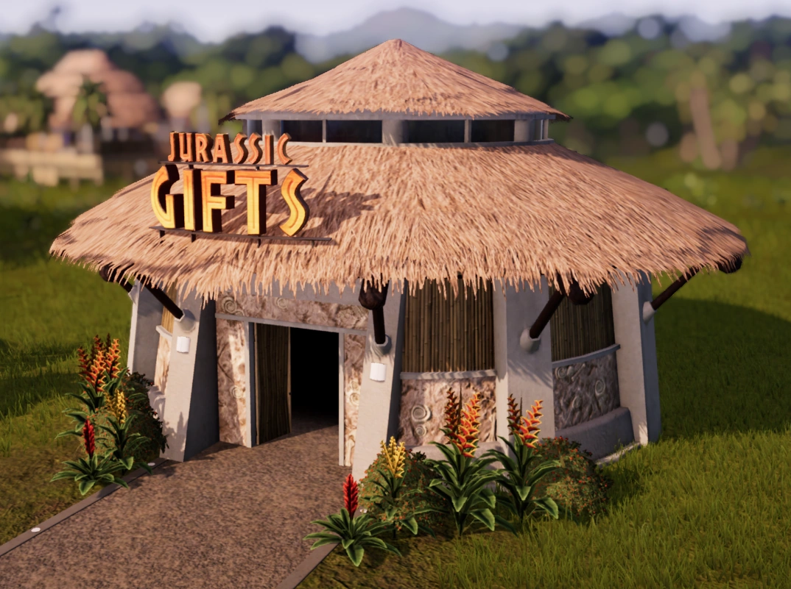Jurassic Falls
En varias ubicaciones del parque encontrarás máquinas expendedoras de bebidas y golosinas con temática de dinosaurios. Desde refrescos y agua embotellada hasta snacks saludables y golosinas, nuestras máquinas ofrecen algo para todos. Además, algunas máquinas expendedoras cuentan con juegos interactivos que entretendrán a los más pequeños mientras seleccionan su snack.
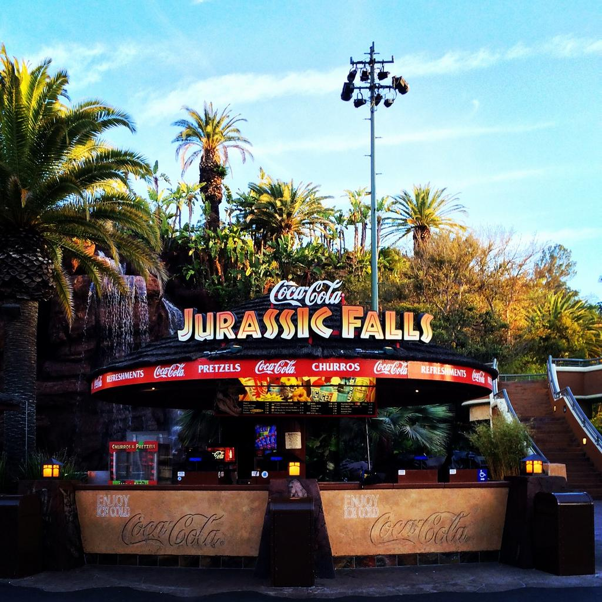Sanitarios
Jurassic Park cuenta con modernos y amplios baños situados estratégicamente en diferentes zonas del parque. Cada instalación está equipada con tecnología avanzada y comodidades para garantizar la higiene y comodidad de todos nuestros visitantes. También disponemos de baños familiares y accesibles para personas con discapacidad.
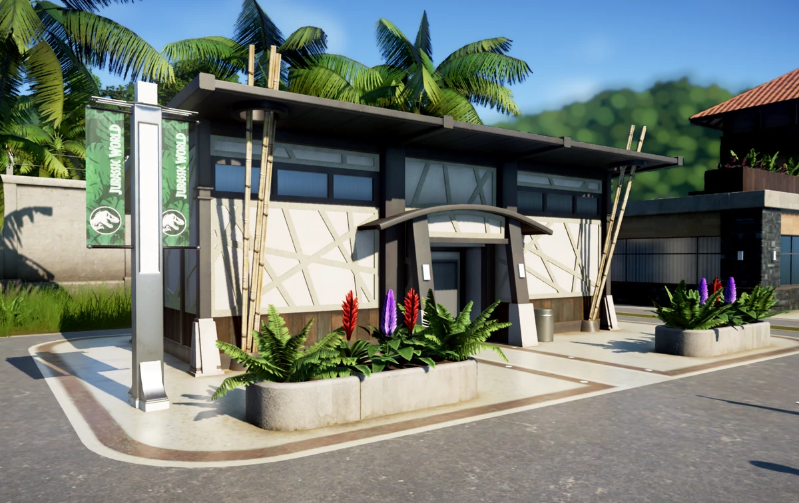Otros Servicios
Además de lo mencionado, contamos con:
- Zonas de descanso: Áreas sombreadas con bancos y mesas para que puedas relajarte.
- Centro de primeros auxilios: Personal médico capacitado está disponible para cualquier emergencia.
- Puntos de información: Personal amable y bien informado está disponible para responder a cualquier pregunta y ayudarte a planificar tu día.
Consejos de Viaje:
- Reserva tus entradas y alojamiento con antelación para garantizar tu visita.
- Usa ropa cómoda y calzado adecuado para caminar.
- No olvides tu cámara para capturar momentos inolvidables.
Contacto y Reservas:
Para más información y reservas, visita nuestro sitio web oficial o contacta a nuestro equipo de
atención al
cliente.
Cómo Llegar:
Jurassic Park Europa es accesible mediante vuelos a Ponta Delgada,
el aeropuerto principal de São Miguel. Desde allí, servicios de transporte directo
al parque están disponibles. También se puede llegar en barco desde otras islas de las Azores.
Ven y vive una aventura que desafía la imaginación en Jurassic Park Europa, donde el pasado cobra vida en un entorno natural y educativo, ofreciendo una experiencia inolvidable para visitantes de todas las edades.
Seguridad en Jurassic Europa
En Jurassic Park Europa, la seguridad es una prioridad absoluta tanto para los visitantes como para los dinosaurios que habitan el parque. Desde su creación, InGen ha implementado una serie de medidas de seguridad avanzadas para garantizar una experiencia segura y educativa para todos los visitantes, así como para proporcionar un ambiente controlado y saludable para los dinosaurios clonados.
Para los visitantes, Jurassic Park está equipado con una infraestructura robusta y sistemas de monitoreo de última generación. Las alambradas electrificadas aseguran que los dinosaurios permanezcan dentro de sus hábitats designados, minimizando cualquier riesgo de escape. Además, el parque cuenta con bunkers de emergencia estratégicamente ubicados.
Para los dinosaurios, el bienestar es igualmente crucial. Los hábitats están diseñados para replicar sus entornos naturales lo más fielmente posible, y se utilizan dispositivos de sonido y olor para mantenerlos tranquilos y alejados de áreas restringidas. Los expertos en comportamiento animal, veterinarios y genetistas de InGen trabajan incansablemente para asegurar que cada dinosaurio reciba el cuidado adecuado, incluyendo alimentación especializada, atención médica y espacio suficiente para moverse libremente.
Vehiculos Safari
Alambradas Electrificadas
En Jurassic Park contamos con alambradas electrificadas de tres niveles de seguridad:
- Baja Seguridad: Utilizadas para separar áreas menos peligrosas.
- Media Seguridad: Utilizadas para zonas con dinosaurios medianamente peligrosos.
- Alta Seguridad: Utilizadas para los dinosaurios más peligrosos.

Estacion de Ranger
Contamos con una estación de rangers equipada con el armamento y equipo necesario para manejar cualquier situación de emergencia. Los rangers están siempre listos para actuar y garantizar la seguridad del parque.
Para proteger a nuestros visitantes y personal, disponemos de una armería equipada con:
- Rifles Tranquilizadores: Para sedar a los dinosaurios en situaciones de emergencia.
- Armas de Fuego: Utilizadas solo en casos extremos para protección.
- Municiones Especializadas: Diseñadas específicamente para incapacitar a dinosaurios sin causarles daño permanente.
Bunkers de Emergencia
Nuestros bunkers están equipados con todos los elementos necesarios para sobrevivir en caso de emergencia:
- Bengalas: Para señalización y distracción de dinosaurios.
- Botiquines: Equipados con suministros médicos de emergencia.
- Alimentos y Agua: Provisiones suficientes para varios días.
Dispositivos de Seguridad
Nuestro parque está monitoreado constantemente por un sistema de cámaras de seguridad de alta definición que cubren todas las áreas, asegurando una vigilancia constante y una respuesta rápida a cualquier incidente. Además de las cámaras, utilizamos una variedad de dispositivos de seguridad como sensores de movimiento, alarmas y sistemas de comunicación avanzada para mantener un entorno seguro y controlado.
Para mantener la seguridad en el parque, también contamos con:
- Dispositivos de Sonido: Para ahuyentar a los dinosaurios con ruidos específicos.
- Dispositivos de Olor: Emisores de olores desagradables para los dinosaurios.
- Luces de Alta Intensidad: Para desorientar y ahuyentar a los dinosaurios nocturnos.
Protocolos de Emergencia
Hemos establecido protocolos de emergencia bien definidos y entrenamos regularmente a nuestro personal para manejar cualquier situación, garantizando una evacuación rápida y segura si es necesario.
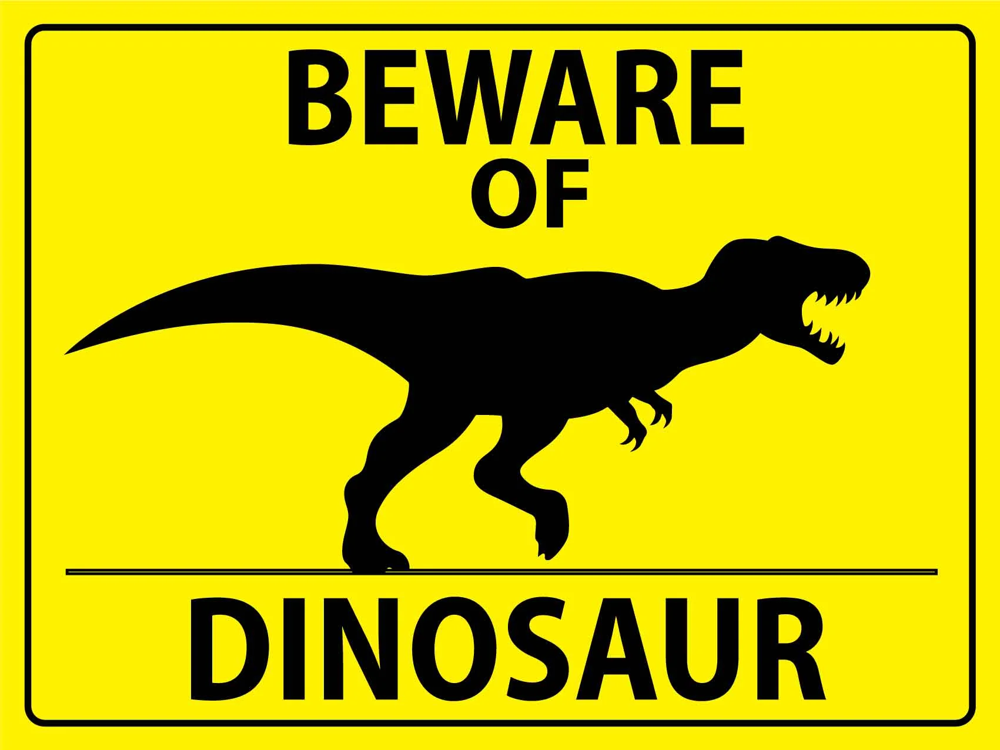Estas medidas garantizan no solo la protección de los visitantes, sino también la preservación y el cuidado de los dinosaurios, creando un equilibrio entre la emoción de la aventura y la responsabilidad de la seguridad. Jurassic Park combina tecnología de punta, planificación meticulosa y un equipo dedicado para ofrecer una experiencia inolvidable y segura, donde los visitantes pueden maravillarse con los dinosaurios mientras se asegura el bienestar de estas majestuosas criaturas.
Atracciones de Jurassic Park Europa
Explora las emocionantes atracciones que Jurassic Park Europa tiene para ofrecer. Desde impresionantes miradores hasta paseos en lancha, cada aventura te llevará más cerca de los majestuosos dinosaurios y la naturaleza espectacular de la isla.
Miradores
Nuestros miradores están estratégicamente ubicados para ofrecer vistas panorámicas de los hábitats de los dinosaurios. Desde estos puntos elevados, podrás observar a los dinosaurios en su entorno natural, brindando una perspectiva única y segura. Equipados con telescopios y paneles informativos, los miradores son una parada obligada para cualquier visitante del parque.
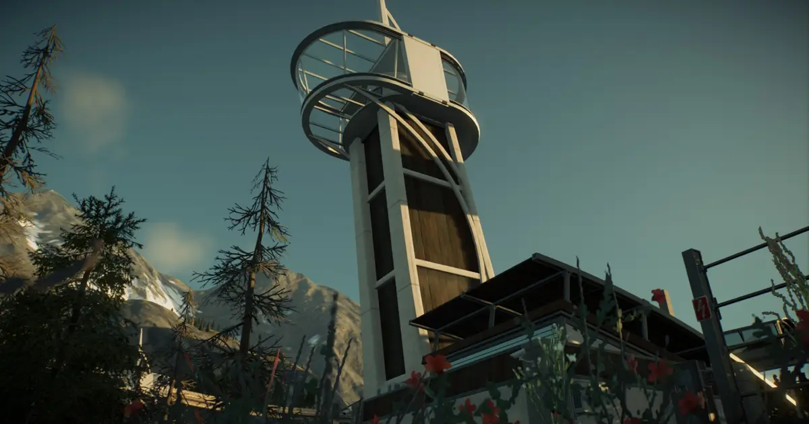Safari
Embárcate en un emocionante safari y observa de cerca a los dinosaurios en su hábitat natural, guiado por expertos en vida silvestre.
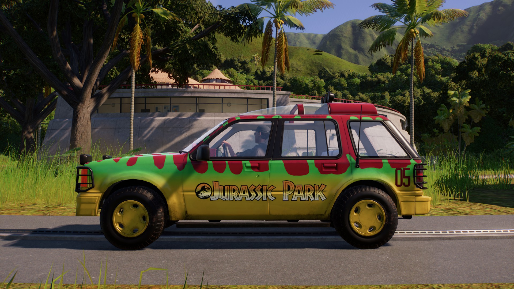Domos de Observacion
Vive una experiencia única en nuestros domos de observación, donde podrás ver a los dinosaurios más cerca que nunca en un entorno seguro y controlado.

Campos de Golf
Relájate y disfruta de una partida de golf en nuestros campos perfectamente cuidados, rodeados de la impresionante flora y fauna de la isla.
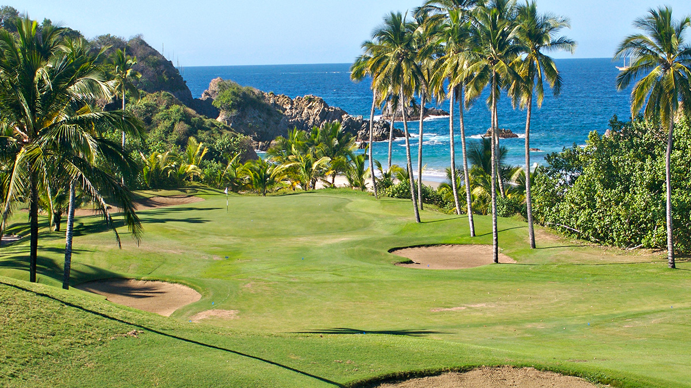Paseo en Globo
Admira la majestuosidad de Isla Nublar desde el cielo con un inolvidable paseo en globo, obteniendo una perspectiva única del parque y sus atracciones.
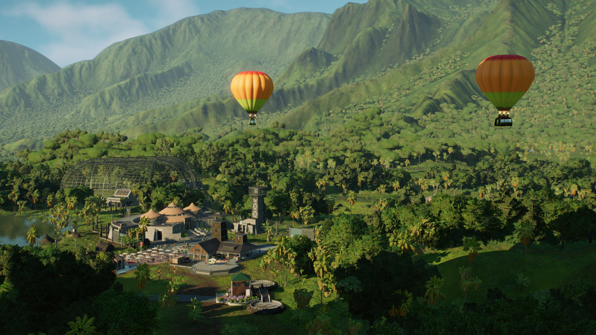Paseo en Lancha
Navega por los ríos y lagos de la isla en un relajante paseo en lancha, ideal para observar la naturaleza y a los dinosaurios.
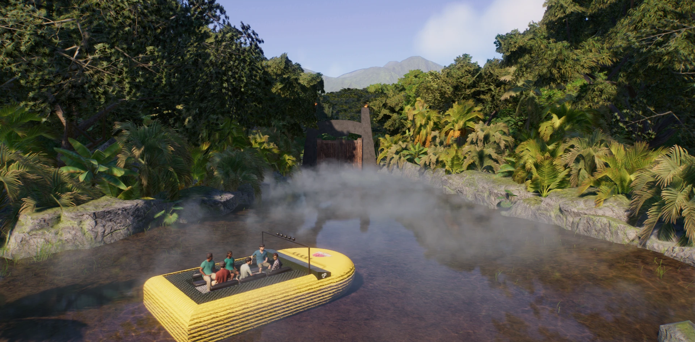Bone Shaker
Prepárate para una descarga de adrenalina en la montaña rusa Bone Shaker. Siente la emoción y la velocidad en cada giro y caída de esta atracción emocionante.

Dinosaurios
Descubre las increíbles especies de dinosaurios que habitaron en Europa. Aprende sobre sus características, su dieta y la época en la que vivieron.
Herbivoros
Contamos con 6 herbívoros:
Iguanodon
El Iguanodon es uno de los dinosaurios herbívoros más conocidos, caracterizado por su pulgar en forma de espina. Vivió durante el período Cretácico temprano, hace aproximadamente 140-125 millones de años.
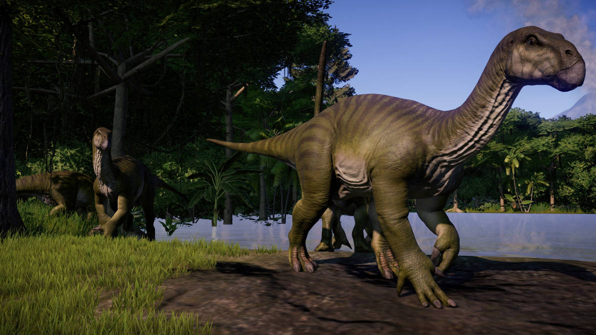Hypsilophodon
El Hypsilophodon es un pequeño dinosaurio herbívoro ágil y rápido, conocido por sus dientes afilados adaptados para comer plantas. Vivió durante el período Cretácico temprano, hace aproximadamente 125-100 millones de años.
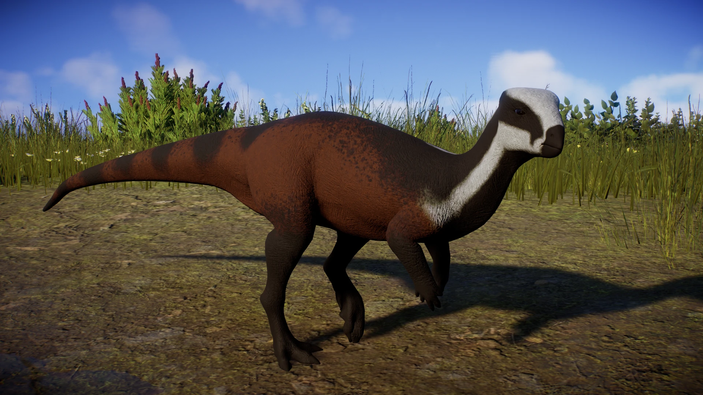Camptosaurus
El Camptosaurus es un dinosaurio herbívoro que vivió durante el período Jurásico tardío, hace aproximadamente 156-145 millones de años. Era un animal de tamaño medio con una postura semi-bípeda.

Europasaurus
El Europasaurus es un pequeño saurópodo herbívoro que vivió durante el período Jurásico tardío, hace aproximadamente 154-151 millones de años. Era conocido por su pequeño tamaño en comparación con otros saurópodos.

Histriasaurus
El Histriasaurus es un dinosaurio herbívoro que vivió durante el período Cretácico temprano, hace aproximadamente 125-112 millones de años. Tenía un cuerpo grande y una cola larga.
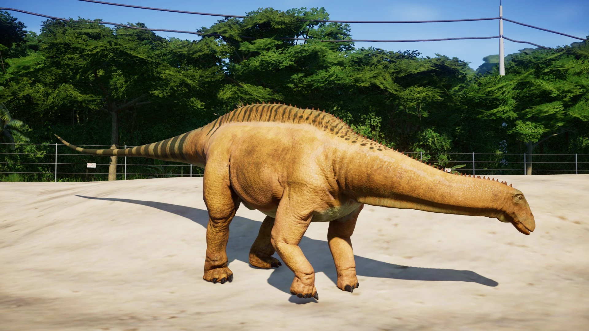Ankylosaurus
El Ankylosaurus, aunque más comúnmente asociado con América del Norte, también tiene especies cercanas en Europa. Vivió durante el período Cretácico tardío, hace aproximadamente 68-66 millones de años. Es conocido por su armadura corporal.
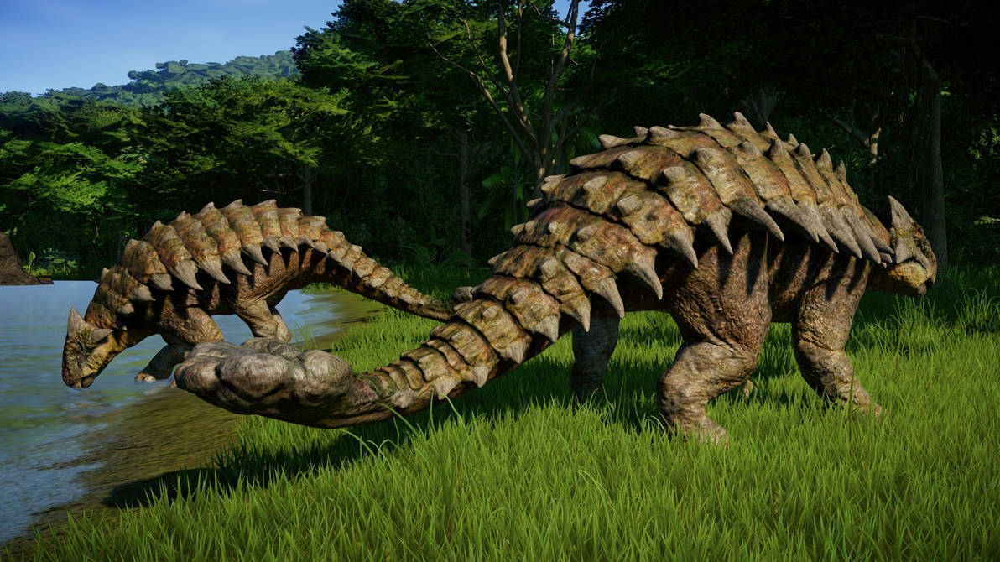Carnivoros
Contamos con 6 especies de carnívoros:
Baryonyx
El Baryonyx es conocido por su gran garra en el pulgar y su dieta predominantemente piscívora. Vivió durante el período Cretácico temprano, hace aproximadamente 130-125 millones de años.
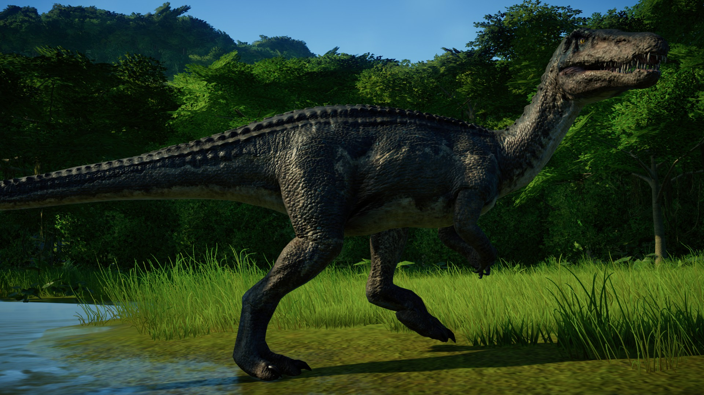Allosaurus
El Allosaurus, aunque más común en América del Norte, también se ha encontrado en Europa. Vivió durante el período Jurásico tardío, hace aproximadamente 155-150 millones de años.
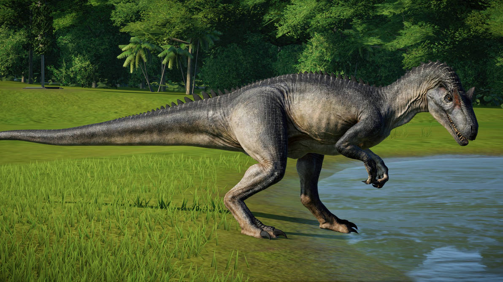Neovenator
El Neovenator es un gran dinosaurio carnívoro que vivió durante el período Cretácico temprano, hace aproximadamente 125 millones de años. Fue uno de los principales depredadores en Europa.

Concavenator
El Concavenator es conocido por su distintiva cresta en la espalda. Vivió durante el período Cretácico temprano, hace aproximadamente 130-125 millones de años.
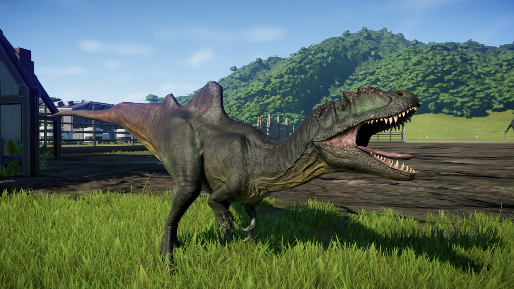Pterodaustro
El Pterodaustro es un pterosaurio conocido por sus dientes largos y finos que probablemente utilizaba para filtrar alimentos del agua. Vivió durante el período Cretácico temprano, hace aproximadamente 105-100 millones de años.

Torvosaurus
El Torvosaurus es uno de los carnívoros más grandes que vivió en Europa durante el período Jurásico tardío, hace aproximadamente 153-148 millones de años.
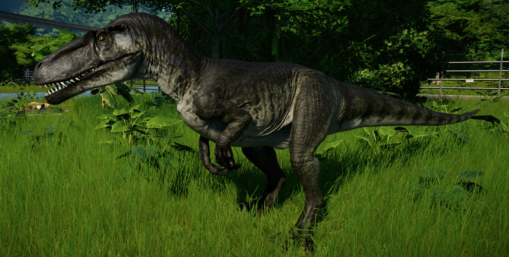